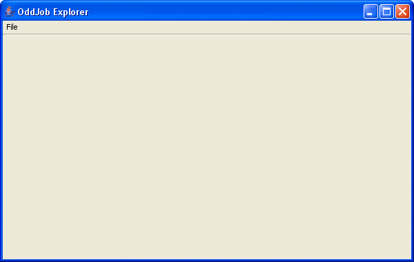
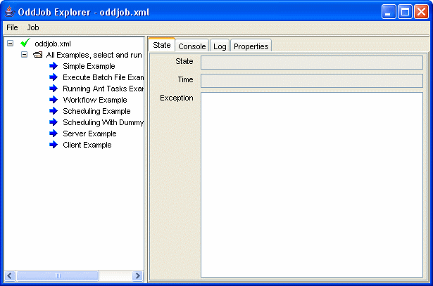

Getting started with Oddjob.
To start using Oddjob double-click the run-oddjob.jar
file in the
top level oddjob-@version@ that was created when you installed Oddjob.
You will be presented with a rather uninspiring empty frame with a single File menu item. This is Oddjob Explorer.
Oddjob Explorer is the primary method for monitoring and controlling jobs in Oddjob. To get started with Oddjob Explorer, we must open a configuration file containing the jobs we want Oddjob to run. Let's take a look at the examples shipped with Oddjob.
Select Open from the File menu, open the examples
directory and select oddjob.xml. A Tree panel should appear on
the left, with a green tick as the root node, and a panel with
some tabbed panes should appear on the right.
Expand the tree and there will be a folder with some blue arrows in it.
So we have a green tick, a folder, and some blue arrows. What's all this about? When we opened the file, Oddjob Explorer used an Oddjob job to load the file and create the other jobs. This Oddjob job is the King (or Queen) of jobs - Nothing happens in Oddjob without one. The topmost node in our tree view is that Oddjob job. The green tick showed it ran OK.
Next is the folder. Using folders to group jobs in is analogous to using folders on your hard drive for grouping files in. Folders can be nested in other folders allowing your jobs to be grouped and organised in any way you choose. A folder can be shared on a network allowing your jobs to be scheduled from a server or run manually from another Oddjob Explorer on another computer. Exciting stuff - but back to our simple folder of examples...
Our folder contains a lot of blue arrows. These are jobs that are ready to run. Since our folder is not shared on a network, the only way these job are going to run is if we run them manually. Let's run the first job 'Simple Example'. Select the node and then select the Job menu and select Run. The blue arrow changes to a green tick but also the job now has a child, and that is also a green tick. What happened? The job we ran was another Oddjob job, preconfigured with the name of the file containing our example job. This Oddjob job loaded the example job and this time ran it (because it wasn't in a folder).
The ability to nest Oddjob jobs within each other allows very large scale complicated business processes to be defined in small manageable chunks. Oddjob jobs can be scheduled just like other jobs or they can be run automatically by not placing them in folders. If we changed the folder to be a parallel job all examples would run at once, if we changed it to be a sequential job, all the jobs would run one after the other. Very flexible things are Oddjob jobs.
The green tick and blue arrow indicate what state a job is in. A job can be in one of five states. These are:
|
Ready | The job is ready to be executed. A job will only execute if it is 'Ready' |
|
Executing | The job is executing. |
|
Complete | The job has completed successfully. |
|
Incomplete | The job ran but was not able to complete - e.g. a file was not available. |
|
Exception | Something unexpected happened during the running of the job - e.g. a network connection failed. |
You may also see the icons  to indicate that a job is stopping or
to indicate that a job is stopping or
 to indicate that it is
sleeping. For both these icons the actual state of the job is still
'Executing'.
to indicate that it is
sleeping. For both these icons the actual state of the job is still
'Executing'.
Now we will try and run a job again. Select the 'Greeting' job and then try and select Run from the Job menu. It isn't available. A job must be reset to the ready state before it can be executed again. There are two different types of reset that can be applied to a job, known as a hard or a soft reset. The origins of this feature derive from the requirement that an automated retry need only rerun the incomplete or failed jobs in a partially complete sequence of jobs. A soft reset will reset an InComplete state job or an Exception state job but will not reset a Complete state job. A hard reset will reset any job that has finished executing.
As we would like to manually reset a complete job we only have one option which is a 'hard reset'. Select Hard Reset from the Job menu. The job should go back to the ready state and we can run it again.